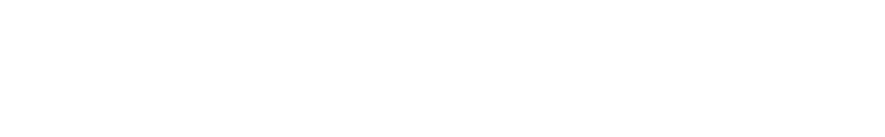
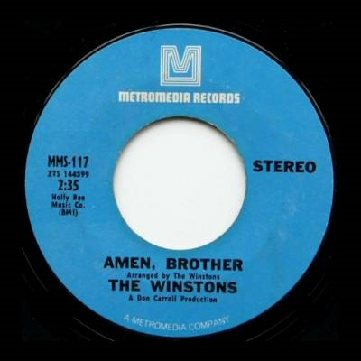
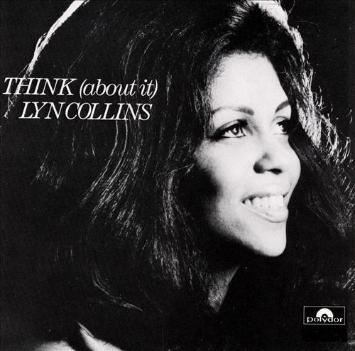

Breakcore & the Amen Break
Breakcore is an electronic music dance genre which is a result of evolving jungle,
hardcore and drum'n'bass music back in the late 90s.
Its characteristics are mainly very complex breakbeats and an unending palette of sampling
sources of any sound with potential to make the tune interesting.
The genre itself doesn't limit itself to simply samples and grim themes as it can go from something
being rather humoristic or be absolutely driven with emotions of original pieces.



Most characteristic breakbeat for this genre is the Amen Break which is a snippet sampled from the track Amen, Brother by The Winstons released back in 1969.
At about 1 minute and 26 seconds into "Amen, Brother", the other musicians stop playing and the drummer, Gregory Coleman, performs a four-bar drum break that lasts for seven seconds.
For two bars, Coleman plays the previous beat. In the third bar, he delays a snare hit. In the fourth bar, he leaves the first beat empty,
then plays a syncopated pattern and an early crash cymbal. The drum break was added to lengthen the track, which had been too short with just the riff.
Spencer said he directed the break, but Phil Tolotta, the only other surviving member of the band in 2015, credited it solely to Coleman. Given the popularity of the sample,
The Winstons received no royalties for it whatsoever. The bandleader, Richard Lewis Spencer, was not aware of its use until 1996, after the statute of limitations
for copyright infringement had passed. He condemned its use as plagiarism, but later said it was flattering. He said it was unlikely that Coleman,
who died homeless and destitute in 2006, realized the impact he had made on music.
FUN FACT: The whole track has been recorded in roughly 20 minutes only.